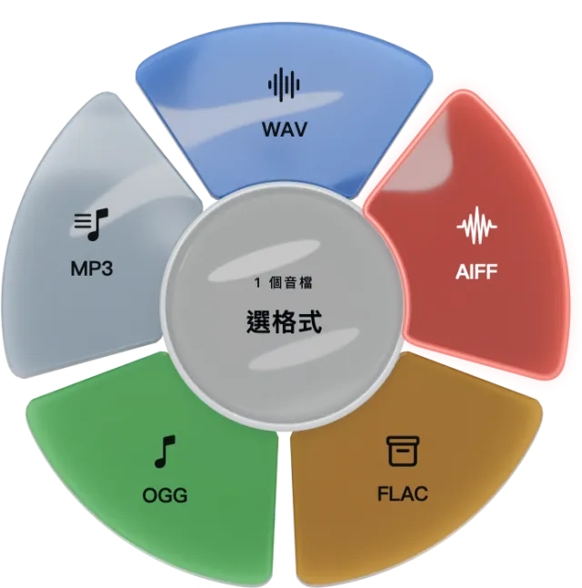
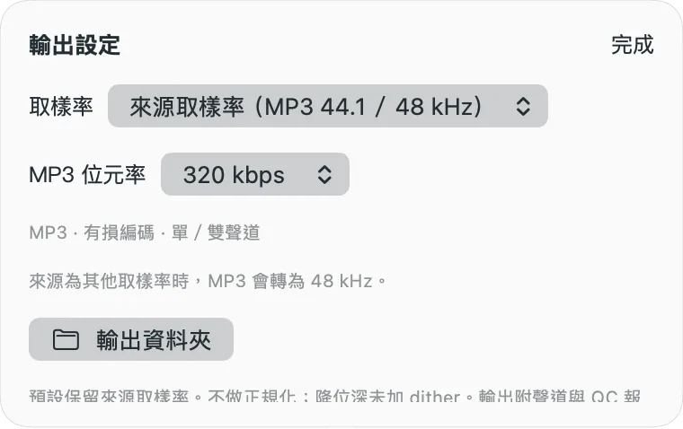

Drop a file, or a whole folder.
Analyze the source, then choose a format and layout. Ambiguous channel layouts need an explicit choice.
Offline audio · Open source · macOS
One file or a whole batch. Everyday formats or multichannel audio. Process it offline on your Mac, with a clear record of each conversion.
Apple Silicon · macOS 26+ · MIT License

Five output formats. Different jobs.
The main steps fit into one floating wheel. Open the details when you need parameters or individual results.
Analyze the source, then choose a format and layout. Ambiguous channel layouts need an explicit choice.
Keep the source layout, downmix, or try experimental PCM upmix. MP3 supports mono and stereo.
Each output comes with a JSON conversion and QC report. Existing output names are refused, so you can retry in another folder.

The details stay in your hands
For listening copies, sharing or everyday organization. Check the bitrate, sample rate and output folder before you start.
Conversion needs no account, API key or cloud service. Initial setup needs internet access to install dependencies.
Explicit layouts and downmixing, experimental 5.1/7.1.4 PCM upmix, and ADM/BWF rendering with EBU EAR.
MIT-licensed interface and engine source, with build instructions and tests. Third-party dependencies retain their own licenses.
Make it yours
You need an Apple Silicon Mac, macOS 26+, Xcode Command Line Tools with a macOS 26+ SDK, and Python 3.12.
This is a source build. The development app depends on your local Python installation. This page does not offer a standalone installer.
git clone https://github.com/mickyyang-1407/utuvo-convert.git
cd utuvo-convert
sh scripts/setup.sh
sh app/build.sh
open "build/UTUVO convert.app"It produces estimated multichannel PCM, not Atmos objects, ADM export or Dolby Digital Plus JOC. Listening quality and compatibility on physical surround/height speakers require separate acceptance.
Checks include format, duration, sample rate, channel count and finite samples. They do not guarantee playback peaks below 0 dBFS. MP3 reconstruction can overshoot full scale; the app warns and does not silently normalize the level.
Ordinary decoded PCM has a 512 MiB safety cap. Descriptive tags are not copied, and bit-depth reduction does not add dither. Validated on Apple Silicon/macOS 27; other Macs and OS versions remain untested. Read all limitations.